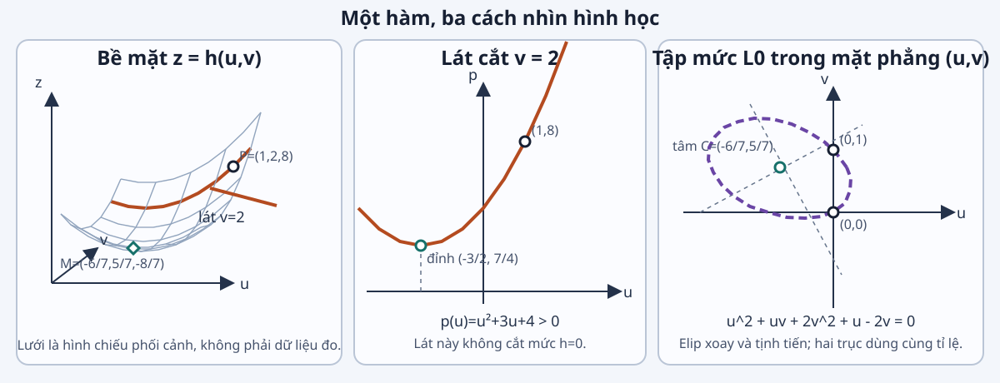

Đại số tuyến tính · Giải tích nhiều biến · Xác suất
Buổi ôn bổ trợ trước Bài 01; không thay nội dung Buổi 1 chính thức.
Mục tiêu bài học
Luận điểm trung tâm: biến dữ liệu thành mô hình và dự đoán kèm bất định.
Mục tiêu quan sát được (bổ trợ, suy ra từ tiên quyết):
M0.1: mô tả từng mẫu, ý nghĩa trọng số và phần dư trên dữ liệu cụ thể.
M0.2: ghép mẫu thành ma trận; tính đúng kích thước, chuẩn, hạng và dạng toàn phương.
M0.3: tính gradient và Hessian; tìm nghiệm bình phương tối thiểu từ điều kiện gradient bằng không.
M0.4: phân biệt nhiễu với phần dư; diễn giải phân phối một biến, nhiều biến và dự đoán có bất định.
Bản đồ bài học
Dữ liệu → biểu diễn và mô hình → học tham số → dự đoán kèm bất định
Ví dụ giá nhà chỉ là bối cảnh minh họa; trọng tâm là ôn tập các công cụ toán học cho AI.
Vấn đề trung tâm cần giải quyết: từ một bộ dữ liệu quan sát nhỏ, xây dựng mô hình có tham số, tìm tham số phù hợp và lượng hóa mức bất định của dự đoán; ba lĩnh vực toán học đóng vai trò khác nhau nhưng liên kết trong cùng một quy trình giải bài toán này.
Bốn căn nhà đã quan sát
Giá dùng đơn vị $100$ triệu đồng. Dữ liệu được tạo để tính bằng tay.
Căn
Diện tích $a_i$
Phòng ngủ $b_i$
Giá $y_i$
1
$40\,\mathrm{m}^2$
1
11 (1,1 tỷ đồng)
2
$50\,\mathrm{m}^2$
2
12 (1,2 tỷ đồng)
3
$60\,\mathrm{m}^2$
2
14 (1,4 tỷ đồng)
4
$70\,\mathrm{m}^2$
3
19 (1,9 tỷ đồng)
Dự đoán giá từng căn nhà
Dữ liệu dùng cho mô hình: các cột đỏ, in đậm.
Căn
$a_i$ ($\mathrm{m}^2$)
$b_i$ (phòng)
$a'_i=(a_i-55)/10$
$b'_i=b_i-2$
$y_i$
$1$
$40$
$1$
$-1{,}5$
$-1$
$11$
$2$
$50$
$2$
$-0{,}5$
$0$
$12$
$3$
$60$
$2$
$0{,}5$
$0$
$14$
$4$
$70$
$3$
$1{,}5$
$1$
$19$
Mô hình giá nhà tuyến tính:
$$\hat y_i=w_0+w_1a'_i+w_2b'_i.$$
$w_0$: giá nền; $w_1$: đổi giá mỗi $10\,\mathrm{m}^2$; $w_2$: đổi giá mỗi phòng.
Phần dư của từng dự đoán
Thử $(w_0,w_1,w_2)=(14,1,1)$; đặt $r_i=\hat y_i-y_i$.
Căn
$(a'_i,b'_i)$
Thay số
$\hat y_i$
$r_i$
1
$(-1{,}5,-1)$
$14-1{,}5-1$
$11{,}5$
$+0{,}5$
2
$(-0{,}5,0)$
$14-0{,}5+0$
$13{,}5$
$+1{,}5$
3
$(0{,}5,0)$
$14+0{,}5+0$
$14{,}5$
$+0{,}5$
4
$(1{,}5,1)$
$14+1{,}5+1$
$16{,}5$
$-2{,}5$
$r_i>0$: dự đoán cao; $r_i<0$: dự đoán thấp. Một đơn vị giá bằng 100 triệu đồng.
Nguồn gốc của phần dư
Mô hình
Thiếu đặc trưng, sai dạng hàm hoặc trọng số chưa phù hợp.
$f(\mathbf w)$ là một con số đánh giá độ phù hợp của mô hình trên dữ liệu giá đã quan sát. Giá trị càng nhỏ, dự đoán nhìn chung càng gần giá quan sát.
Đối tượng của đại số tuyến tính
Phần H đã dùng $r_i$, $f(\mathbf w)$ và véc-tơ trọng số; giờ cần phân biệt chính xác kiểu của từng đại lượng: $r_i$ là vô hướng, $\mathbf r$ là véc-tơ, còn $f(\mathbf w)$ là vô hướng; nhầm kiểu làm phép toán trở nên vô nghĩa.
Vô hướng
$\alpha=2{,}5\in\mathbb R$
Một giá trị.
Véc-tơ
$\mathbf v=[v_1,v_2,v_3]^T\in\mathbb R^3$
Một danh sách có thứ tự.
Ma trận
$\mathbf A=[a_{ij}]\in\mathbb R^{m\times n}$
Một bảng $m$ hàng, $n$ cột.
Trước khi tính, xác định loại đối tượng và kích thước để biết phép toán có hợp lệ hay không.
Véc-tơ và phép toán
$\boldsymbol\phi_1$ ghép ba số của căn 1 trong H02; $\mathbf w^{(0)}$ là bộ trọng số thử ở H03. A08 sẽ chính thức hóa khái niệm véc-tơ đặc trưng.
Nghịch đảo chỉ tồn tại khi ma trận vuông và khả nghịch.
Với ma trận chữ nhật chung $\mathbf M\in\mathbb R^{4\times3}$, $\mathbf M^{-1}$ không tồn tại vì $\mathbf M$ không vuông.
Hạng và phụ thuộc tuyến tính
Cho $\mathbf A\in\mathbb R^{m\times n}$ với không gian cột $\operatorname{Col}(\mathbf A)=\{\mathbf A\mathbf d:\mathbf d\in\mathbb R^n\}$; $\operatorname{rank}(\mathbf A)=\dim\operatorname{Col}(\mathbf A)$.
Hạng thấp báo hiệu đặc trưng trùng lặp; hệ có thể nhiều nghiệm hoặc vô nghiệm.
Dạng toàn phương và tính dương
Cho $\mathbf Q\in\mathbb S^n$ đối xứng và $q(\mathbf d)=\mathbf d^T\mathbf Q\mathbf d$, trong đó $\mathbb S^n$ là tập các ma trận đối xứng cỡ $n\times n$.
Nửa xác định dương (PSD): $\mathbf Q\succeq\mathbf0$ nếu $q(\mathbf d)\ge0$ với mọi $\mathbf d$.
Xác định dương (PD): $\mathbf Q\succ\mathbf0$ nếu $q(\mathbf d)>0$ với mọi $\mathbf d\ne\mathbf0$.
Với $\mathbf Q=\mathbf A^T\mathbf A$: $\mathbf d^T\mathbf Q\mathbf d=\|\mathbf A\mathbf d\|_2^2\ge0$; $\mathbf Q$ là PD khi $\mathbf A$ có hạng cột đầy đủ. Cấu trúc $\mathbf A^T\mathbf A$ này sẽ trở lại đúng như $\mathbf X^T\mathbf X$ ở A14 và B17.
Bài tập nền tảng đại số tuyến tính
Câu hỏi:
Phân loại $3$, $[1,2]^T$ và $\begin{bmatrix}1&0\\0&1\end{bmatrix}$.
Tính tích vô hướng $[1,-1][2,3]^T$.
Với $\mathbf A\in\mathbb R^{2\times3}$ và $\mathbf x\in\mathbb R^3$, ghi kích thước của $\mathbf A\mathbf x$.
Tự kiểm
Kiểm tra $\mathbf A^{-1}\mathbf A=\mathbf I$ ở ví dụ hệ $2\times2$.
Tính hạng của $\begin{bmatrix}1&2\\2&4\end{bmatrix}$.
Với $\mathbf Q=\operatorname{diag}(2,3)$, tính $\mathbf d^T\mathbf Q\mathbf d$ tại $\mathbf d=(1,-1)^T$.
Nhiều mẫu và nhiều đặc trưng
Với mỗi căn nhà, đặt $\boldsymbol\phi_i=(1,a'_i,b'_i)^T$ và gọi $\boldsymbol\phi_i$ là véc-tơ đặc trưng.
Mô hình tuyến tính theo trọng số vẫn linh hoạt vì véc-tơ đặc trưng có thể chứa $(a')^2$ hoặc các biến đổi phi tuyến khác.
Câu hỏi: Mô hình có còn tuyến tính theo trọng số không?
Hệ dữ liệu không tương thích
Với bốn mẫu giá nhà, hệ $\mathbf X\mathbf w=\mathbf y$ không có nghiệm chính xác.
Kiểm tra mâu thuẫn
Căn 2–3 cho $w_1=2$.
Căn 1–2 cho $w_1+w_2=1$.
Căn 3–4 cho $w_1+w_2=5$.
Bài toán xấp xỉ
$\mathbf X\mathbf w=\mathbf y\iff\mathbf r(\mathbf w)=\mathbf0$, với $\mathbf r(\mathbf w)=\mathbf X\mathbf w-\mathbf y$ là véc-tơ phần dư theo trọng số $\mathbf w$; B14 sẽ dùng $\mathbf r(\mathbf w)$ này.
Đại số tuyến tính biểu diễn hệ không tương thích; giải tích tìm trọng số làm phần dư nhỏ nhất.
Bình phương tối thiểu là phép chiếu
$\operatorname{Col}(\mathbf X)=\{\mathbf X\mathbf w:\mathbf w\in\mathbb R^3\}$ là không gian cột của $\mathbf X$. Trọng số $\mathbf w_{\mathrm{LS}}$ là nghiệm bình phương tối thiểu; công thức tính $\mathbf w_{\mathrm{LS}}$ sẽ có ở A14.
$$\begin{gathered}\text{Nếu các cột của }\mathbf X\text{ độc lập tuyến tính:}\\ \mathbf w_{\mathrm{LS}}=(\mathbf X^T\mathbf X)^{-1}\mathbf X^T\mathbf y.\end{gathered}$$
Nếu thiếu hạng, $\hat{\mathbf y}$ vẫn duy nhất nhưng $\mathbf w$ có thể không duy nhất.
Bài tập ứng dụng đại số tuyến tính
Câu hỏi:
Từ bốn căn, viết hàng thứ nhất và thứ tư của $\mathbf X$, rồi ghi kích thước của $\mathbf X\mathbf w$.
Tự kiểm
Tại $\mathbf w^{(0)}$, tính $\hat{\mathbf y}$, $\mathbf r$ và $f$.
Cho $\mathbf w_{\mathrm{LS}}=(14,2,1)^T$. Giải thích $\mathbf X^T\mathbf r(\mathbf w_{\mathrm{LS}})=\mathbf0$ bằng hình chiếu.
Đối tượng của giải tích nhiều biến
Hàm vô hướng
$h:\mathbb R^2\to\mathbb R$
$$h(u,v)=u^2+uv+2v^2+u-2v.$$
Tại $(1,2)$, hàm trả về số $h(1,2)=8$.
Ánh xạ véc-tơ
$\mathbf F:\mathbb R^2\to\mathbb R^3$
$\mathbf F(u,v)=[u+v,uv,u-v]^T$.
Tại $(1,2)$, ánh xạ trả về $[3,2,-1]^T$.
Miền xác định là tập đầu vào hợp lệ; đối miền chứa đầu ra; ảnh gồm các giá trị hàm thực sự tạo ra.
Đồ thị, lát cắt và tập mức
Với $h(u,v)=u^2+uv+2v^2+u-2v$, ba góc nhìn trả lời ba câu khác nhau về cùng một hàm.

Đồ thị: độ cao $h(u,v)$.
Lát $v=2$: $p(u)=u^2+3u+4$.
Tập mức: các điểm có cùng giá trị $h$.
Lát cắt và tiếp tuyến
$p'(1)=5$: độ dốc theo $u$.
$q'(2)=7$: độ dốc theo $v$.
Định nghĩa: $\dfrac{\partial h}{\partial u}(u_0,v_0)=\left.\dfrac{\mathrm d}{\mathrm dt}h(t,v_0)\right|_{t=u_0}$; đạo hàm riêng là đạo hàm của lát cắt theo biến đang thay đổi.
Gradient
Với $h:\mathbb R^n\to\mathbb R$ khả vi, gradient là véc-tơ cột
Ví dụ: tại $\mathbf x=(1,2)^T$, chọn $\boldsymbol\Delta=(0{,}1,-0{,}1)^T$: $\mathrm dh=-0{,}2$, nên tuyến tính hóa dự đoán $h(\mathbf x+\boldsymbol\Delta)\approx7{,}8$.
Tại $\mathbf x=(1,2)^T$, $\boldsymbol\Delta=(0{,}1,-0{,}1)^T$:
$$8-0{,}2+0{,}02=7{,}82.$$
Công thức là xấp xỉ nói chung; ở ví dụ này là đẳng thức vì $h$ là đa thức bậc hai.
Tích phân một biến
Khi một đại lượng thay đổi liên tục, tổng tích lũy của nó không thể tính bằng phép cộng hữu hạn; công cụ phù hợp là tích phân. Với $\psi:[a,b]\to\mathbb R$ khả tích, $\int_a^b\psi(x)\,\mathrm dx$ là lượng tích lũy, hay diện tích có dấu.
Một bước làm $f$ giảm; khi đổi bước, cần tính lại $f$ để kiểm tra.
Bài tập tích hợp giải tích
Câu hỏi:
Với dữ liệu giá nhà, dùng $\eta=0{,}05$ để tính một bước gradient từ $\mathbf w^{(0)}$ và kiểm tra $f$ có giảm hay không.
Tự kiểm
Với $h$, tại $\mathbf x=(0,1)^T$ và $\mathbf u=(1,0)^T$, tính gradient, đạo hàm theo hướng và Taylor với $\boldsymbol\Delta=(0{,}1,\,0)^T\in\mathbb R^2$.
Tính gradient của $g\circ\mathbf F$ tại $(0,1)$ bằng Jacobian.
Tính lại hai tích phân ở B12–B13.
Phép thử, không gian mẫu và biến cố
Phép thử ngẫu nhiên: quy trình có kết quả chưa biết trước.
Không gian mẫu: tập mọi kết quả, ký hiệu $\Omega$.
Biến cố: trong không gian hữu hạn này, một tập con $E\subseteq\Omega$.
Gieo một xúc xắc đều: $\Omega=\{1,2,3,4,5,6\}$, $E=\{2,4,6\}$ nên theo quy tắc đếm trực giác, $\Pr(E)=3/6=1/2$. Cách đếm này sẽ được hình thức hóa ở C02 bằng không gian xác suất.
Xác suất và các tiên đề
Một không gian xác suất là bộ ba $(\Omega,\mathcal F,\Pr)$, trong đó $\mathcal F$ là họ các biến cố đóng với các phép cần dùng (phần bù, hợp đếm được) và $\Pr:\mathcal F\to[0,1]$.
Không âm
$E\in\mathcal F\Rightarrow\Pr(E)\ge0$.
Chuẩn hóa
$\Pr(\Omega)=1$.
Cộng đếm được
Nếu $E_1,E_2,\ldots\in\mathcal F$ đôi một rời nhau:
$\Pr(\bigcup_kE_k)=\sum_k\Pr(E_k)$.
Xúc xắc đều: $E=\{2,4,6\}$ nên $\Pr(E)=3/6=1/2$. Hệ quả: $\Pr(\varnothing)=0$, $\Pr(E^c)=1-\Pr(E)$.
Biến ngẫu nhiên
$X:\Omega\to\mathbb R.$
Về hình thức, $X$ phải đo được.
$\omega\in\Omega$ là một kết quả của phép thử.
$X(\omega)$ là giá trị số gắn với kết quả đó.
Chữ hoa $X$: biến ngẫu nhiên.
Chữ thường $x$: giá trị quan sát của $X$.
Ví dụ chỉ báo số chẵn: $X(\omega)=1$ nếu $\omega\in\{2,4,6\}$, và $X(\omega)=0$ nếu ngược lại.
Biến rời rạc và hàm khối xác suất
Hàm khối xác suất (PMF) là $p_X(x)=\Pr(X=x)$ và thỏa
Đây là nơi dùng phép tích lũy B12–B13: mật độ xác suất trở thành xác suất bằng tích phân. Hàm mật độ xác suất (PDF) $p_U(u)\ge0$, $\int_{-\infty}^{\infty}p_U(u)\,du=1$ và $\Pr(U\in A)=\int_A p_U(u)\,du$ cho miền đo được $A$.
$U\sim\operatorname{Unif}(0,2)$: $p_U(u)=1/2$ trên $[0,2]$.
$\Pr(0{,}5\le U\le1{,}5)=1/2$.
$\Pr(U=1)=0$: mật độ không phải xác suất tại một điểm.
Hàm phân phối tích lũy
Hàm phân phối tích lũy (CDF) dùng cho cả biến rời rạc và liên tục:
$$F_X(t)=\Pr(X\le t).$$
Với $U\sim\operatorname{Unif}(0,2)$, $F_U(t)=t/2$ khi $0\le t\le2$.
$\mathbf w_{\mathrm{true}}$ là trọng số sinh dữ liệu, không quan sát được.
Nhiễu $\varepsilon_i$: ngẫu nhiên và không quan sát trực tiếp.
Phần dư: $r_i(\mathbf w)=\hat y_i-y_i$, tính được sau khi chọn $\mathbf w$.
Căn 2: giả sử $\mathbf w_{\mathrm{true}}^T\boldsymbol\phi_2=13$ và $y_2=12$, nên $\varepsilon_2=-1$ và chỉ tại $\mathbf w_{\mathrm{true}}$ có $r_2=1=-\varepsilon_2$.
$$\boldsymbol\Sigma_G=\begin{bmatrix}1&0{,}8\\0{,}8&1\end{bmatrix}\in\mathbb S_{++}^2,$$ trong đó $\mathbb S_{++}^n$ là tập các ma trận đối xứng xác định dương cỡ $n\times n$.